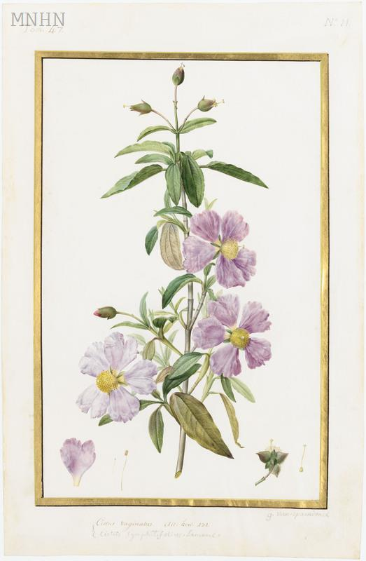

Angiospermae，flowering plants，被子植物
Monocots clade，单子叶植物
Acorales，菖蒲目
Acoracaes，菖蒲科
Arecales，棕榈目
Palmae，棕榈科
Poales，禾本目
Poaceae，禾本科
Eudicots clade，真双子叶植物
Cornales，山茱萸目
Cornaceae，山茱萸科
Malvales，锦葵目
Cistaceae，半日花科
Cistus, 岩蔷薇，叶似薄荷
Dipsacales，川续断目
Caprifoliaceae，忍冬科
Ericales，杜鹃花目
Theaceae，山茶科
Camellia japonica, 山茶花原产中国日本等东亚地区，英国公园也常栽培，在冬天亦盛开如火。唐武则天腊日幸苑，令花神“莫待晓风吹”、快快盛开，许是苑内不曾种山茶。山茶颜色猩红如血，凋谢时总是整朵连头坠落，日本武士视其不祥，命名为“断头花”， 唐代贯修诗云“今朝一朵坠阶前，应有看人怨孙秀”，《晋书》里写孙秀垂涎石崇宠婢绿珠的美貌却遭拒，一怒之下与赵王伦合谋诛石崇于金谷园，绿珠坠楼殉情而死。一年后孙秀、赵王接连于内乱中被杀，王死前大呼“孙秀误我”，家国落红摇坠，着实惨烈。山茶的几何形花瓣与Lancaster和York的红白玫瑰纹章相似，两族相争、流血成河的历史似也使此联想合情合理。但后者重瓣少，属于法国蔷薇，与山茶除同属蔷薇属外，并无联系。


Fagales，壳斗目
Fagaceae，壳斗科
Common Beech, Fagus Sylvatica, very tall, wide girth, smooth bark 欧洲山毛榉

Sweet Chestnut, Castanea sativa, 栗树
Rough bark. 鲁哀公问社于宰我，宰我对曰：“夏后氏以松，殷人以柏，周人以栗，曰'使民战栗'。” 栗木性坚实，希腊人以之为围栏，礼记云“缜密以栗，知也。” 为何又引申出相反“战栗”、“发抖”之义？《诗经·豳风·东山》云“有敦瓜苦，烝在栗薪。”


Betulaceae，桦科
Myrtales，桃金娘目
Myrtaceae，桃金娘科
Magnoliid clade，木兰类植物
Laurales，樟目
Calycanthaceae，腊梅科
Magnoliales，木兰目
Magnoliaceae，木兰科
Gymnospermaes，裸子植物
Pinales，松柏目
stone pine, pinus pinea, umbrella pine，树顶呈伞状


Araucariaceae，南洋杉科
Pinaceae，松科
Black Pine, pinus nigra，欧洲黑松